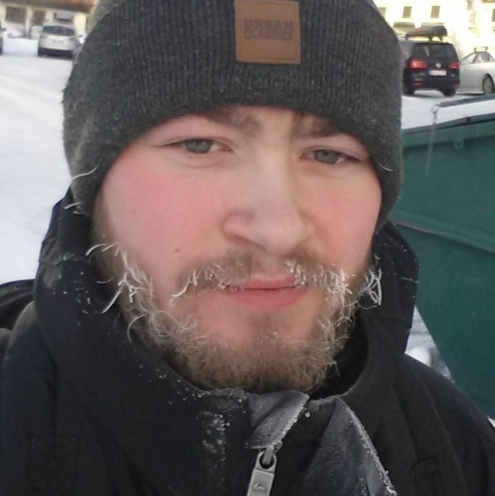

Digital Designer
Computerspil har altid fyldt meget i mit liv. Jeg har været gamer siden jeg var 10. I 2012 startede jeg på GameIT College, hvor min rejse som spiludvikler startede. Her lærte jeg at lave spil, og lagde mit fokus som programmør. Derefter er jeg blevet mere interesseret i spildesign end programmering, og er lige nu igang med at tage en bachelor i Digitale Medier og Design. Andre ting jeg nyder er at spille guitar, snowboarde og arbejde med Arduino.
Uddannelse og job
- Barista, KU.BE Simply Cooking - 2016-2017
- BSc. Digitale Medier og Design, IT-Universitetet - 2016-2019
- Studentermedhjælper, SDC - 2015-2016
- GameIT College, Grenå HTX - 2012-2015
Kompetencer
- Unity og C# udvikling
- Webdesign, HTML5, CSS3, JS, Bootstrap, jQuery, Node.js
- Arduino og kredsløbsdesign
- Projektstyring og eventplanning
- Dansk og engelsk
Kontakt
Telefon: 40 16 89 85
E-mail: jonathan_hertz2@live.dk